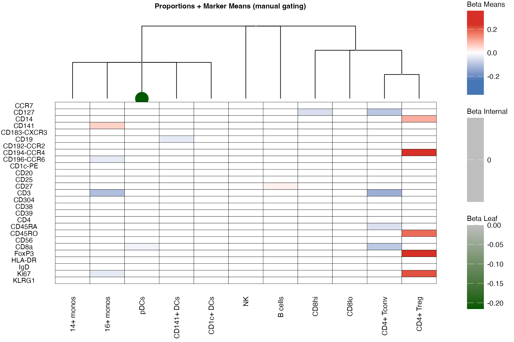
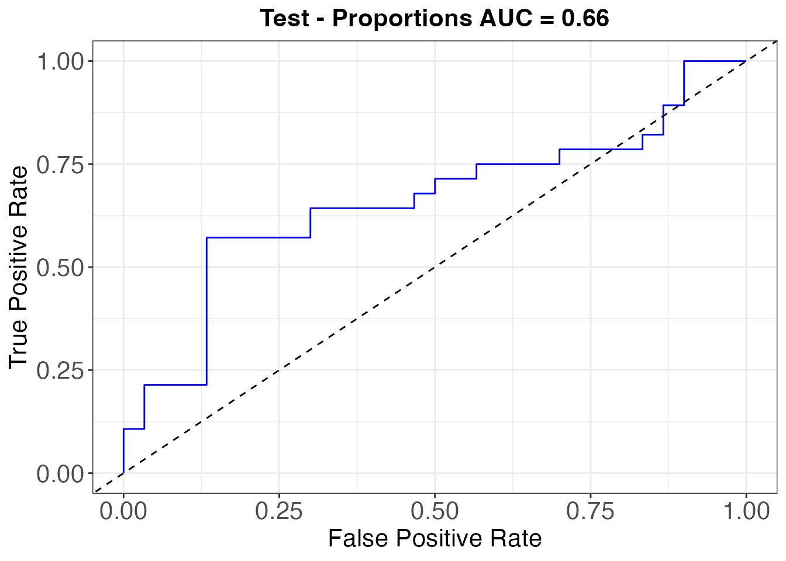
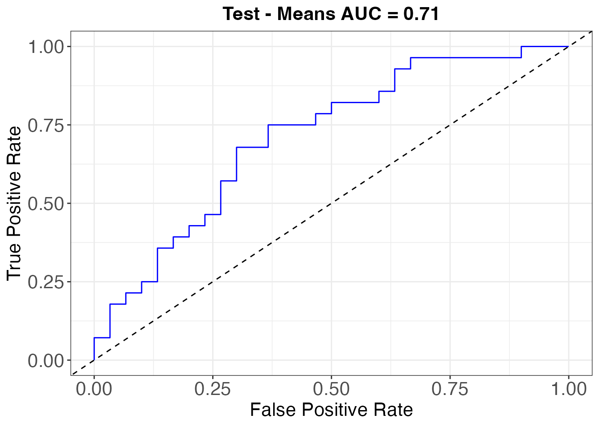

dioscRi with manually gated cell types
Elijah Willie
2026-05-22
Source:vignettes/dioscRi_manual_gating.Rmd
dioscRi_manual_gating.RmdWhen to use this workflow
The introduction vignette defines cell types from the data via FuseSOM clustering on the MMD-VAE latent space. If you already have manually gated populations from domain experts (as in the BioHEART-CT cohort), you can swap those in with three small changes to the introduction pipeline:
- Replace the unsupervised cluster label with the manual-gating column when training the LDA cell-type classifier and computing features.
- Replace the data-driven tree (
generateTree()) with a hand-builtdata.tree::Nodereflecting the gating hierarchy. - Filter out cells whose manual label is
"other"or""before computing features.
Everything else (MMD-VAE training, feature scaling,
fitModel(), plotAUC(), interpretation) is
identical.
This page reuses the MMD-VAE-trained SCE objects produced by the introduction vignette, so the chunks below run end-to-end and produce real plots.
Step 1: transfer manual-gating labels to the test set
train_x <- reducedDim(sce_train, type = "VAE") |>
mutate(cellTypes = as.factor(sce_train$mg_cell_type_distinct))
test_x <- reducedDim(sce_test, type = "VAE")
sce_test$clusters_mg <- trainCellTypeClassifier(
trainX = train_x, testX = test_x, model = "lda"
)Step 2: drop “other” / “” cells and compute features on the gating labels
sce_train <- sce_train[, !(sce_train$mg_cell_type_distinct %in% c("other", ""))]
sce_test <- sce_test [, !(sce_test$clusters_mg %in% c("other", ""))]
sce_test$clusters_mg <- droplevels(sce_test$clusters_mg)
# proportions
prop_logit_train <- computeFeatures(sce_train, featureType = "prop",
cellTypeCol = "mg_cell_type_distinct",
sampleCol = "sample_id",
logit = TRUE, useMarkers = useMarkers)
prop_logit_test <- computeFeatures(sce_test, featureType = "prop",
cellTypeCol = "clusters_mg",
sampleCol = "sample_id",
logit = TRUE, useMarkers = useMarkers)
# marker means
markerMeans_train <- computeFeatures(sce_train, featureType = "mean", assay = "norm",
cellTypeCol = "mg_cell_type_distinct",
sampleCol = "sample_id",
logit = TRUE, useMarkers = useMarkers)
markerMeans_test <- computeFeatures(sce_test, featureType = "mean", assay = "norm",
cellTypeCol = "clusters_mg",
sampleCol = "sample_id",
logit = TRUE, useMarkers = useMarkers)Step 3: build the gating hierarchy by hand
The manual hierarchy reflects the gating strategy used in the
BioHEART-CT study. data.tree::Node builds it;
findChildren(ggtree(...)) converts it into the form
generateGroups() expects.
root <- Node$new("Root")
myeloid <- root$AddChild("Myeloid_logit")
myeloid$AddChild("14+ monos_logit")
myeloid$AddChild("16+ monos_logit")
myeloid$AddChild("pDCs_logit")
myeloid$AddChild("CD141+ DCs_logit")
myeloid$AddChild("CD1c+ DCs_logit")
root$AddChild("NK_logit")
root$AddChild("B cells_logit")
CD3 <- root$AddChild("CD3_logit")
CD3$AddChild("CD8hi_logit")
CD3$AddChild("CD8lo_logit")
CD4 <- CD3$AddChild("CD4_logit")
CD4$AddChild("CD4+ Tconv_logit")
CD4$AddChild("CD4+ Treg_logit")
nclust_mg <- ncol(prop_logit_train)
order_mg <- as.phylo(root)$tip.label
tree_mg <- findChildren(ggtree(as.phylo(root),
ladderize = FALSE, layout = "dendrogram"))
groups <- generateGroups(tree = tree_mg, nClust = nclust_mg,
proportions = prop_logit_train,
means = markerMeans_train)
groups <- lapply(groups, sort)Step 4: fit and evaluate
Design-matrix construction, fitModel(),
plotAUC(), and visualiseModelTree() are
unchanged from the introduction; only type = "MG" is passed
to the visualisation helpers so they use the manual tree.
y_train <- {
rn <- rownames(prop_logit_train)
y <- factor(clinicaldata_train[match(rn, clinicaldata_train$sample_id), "Gensini_bin"])
as.numeric(levels(y))[y]
}
y_test <- {
rn <- rownames(prop_logit_test)
y <- factor(clinicaldata_test[match(rn, clinicaldata_test$sample_id), "Gensini_bin"])
as.numeric(levels(y))[y]
}
X_train <- cbind(prop_logit_train, markerMeans_train) |> as.matrix()
scaleVals <- preProcess(X_train, method = "scale")
X_train <- predict(scaleVals, X_train) |> as.matrix()
X_test <- cbind(prop_logit_test, markerMeans_test) |> as.matrix()
X_test <- predict(scaleVals, X_test)
fit <- fitModel(xTrain = X_train, yTrain = y_train,
groups = groups, penalty = "grLasso", seed = 1994)As in the unsupervised pipeline, the MMD-VAE’s random initialisation makes the test AUC a stochastic draw. Expect the combined-model test AUC on the BioHEART-CT validation cohort in roughly [0.70, 0.85] across re-runs; the published point estimate is 0.79.
Visualise the manual hierarchy
visualiseModelTree(fit$fit, tree = tree_mg, type = "MG",
trainingData = X_train,
nodesToRemove = c("Root", "Myeloid", "CD3", "CD4"),
title = "Proportions + Marker Means (manual gating)")
Variants: proportions-only and means-only
The same overlap-lasso machinery can be applied to either feature family on its own; the two variants below differ from the combined fit only in the design matrix and the group structure.
Proportions only
The groups come directly from the manual gating hierarchy
(type = "prop").
X_train_p <- as.matrix(prop_logit_train)
X_test_p <- as.matrix(prop_logit_test)
groups_p <- generateGroups(tree = tree_mg, nClust = nclust_mg,
proportions = prop_logit_train,
means = markerMeans_train, type = "prop")
groups_p <- lapply(groups_p, sort)
fit_p <- fitModel(xTrain = X_train_p, yTrain = y_train,
groups = groups_p, penalty = "grLasso", seed = 1994)
plotAUC(fit_p$fit, X_test_p, y_test, title = "Test - Proportions AUC =")$plot
Means only
Each per-cell-type marker mean is in its own (singleton) group.
X_train_m <- as.matrix(markerMeans_train)
X_test_m <- as.matrix(markerMeans_test)
groups_m <- as.list(seq_len(ncol(markerMeans_train)))
fit_m <- fitModel(xTrain = X_train_m, yTrain = y_train,
groups = groups_m, penalty = "grLasso", seed = 1994)
plotAUC(fit_m$fit, X_test_m, y_test, title = "Test - Means AUC =")$plot
Session info
## R version 4.5.0 (2025-04-11)
## Platform: aarch64-apple-darwin20
## Running under: macOS 26.4.1
##
## Matrix products: default
## BLAS: /Library/Frameworks/R.framework/Versions/4.5-arm64/Resources/lib/libRblas.0.dylib
## LAPACK: /Library/Frameworks/R.framework/Versions/4.5-arm64/Resources/lib/libRlapack.dylib; LAPACK version 3.12.1
##
## locale:
## [1] en_CA.UTF-8/en_CA.UTF-8/en_CA.UTF-8/C/en_CA.UTF-8/en_CA.UTF-8
##
## time zone: Australia/Sydney
## tzcode source: internal
##
## attached base packages:
## [1] stats4 stats graphics grDevices utils datasets methods
## [8] base
##
## other attached packages:
## [1] ggtree_4.0.4 ape_5.8-1
## [3] data.table_1.18.2.1 data.tree_1.1.0
## [5] caret_7.0-1 lattice_0.22-7
## [7] ggplot2_4.0.1 tidyr_1.3.2
## [9] dplyr_1.1.4 SingleCellExperiment_1.30.1
## [11] SummarizedExperiment_1.40.0 Biobase_2.70.0
## [13] GenomicRanges_1.62.1 Seqinfo_1.0.0
## [15] IRanges_2.44.0 S4Vectors_0.48.0
## [17] BiocGenerics_0.56.0 generics_0.1.4
## [19] MatrixGenerics_1.22.0 matrixStats_1.5.0
## [21] dioscRi_1.0.0 knitr_1.51
## [23] BiocStyle_2.36.0
##
## loaded via a namespace (and not attached):
## [1] RColorBrewer_1.1-3 jsonlite_2.0.0 magrittr_2.0.4
## [4] farver_2.1.2 rmarkdown_2.30 fs_1.6.6
## [7] ragg_1.4.0 vctrs_0.7.1 ROCR_1.0-12
## [10] base64enc_0.1-6 janitor_2.2.1 rstatix_0.7.3
## [13] htmltools_0.5.9 S4Arrays_1.10.1 broom_1.0.12
## [16] SparseArray_1.10.8 Formula_1.2-5 gridGraphics_0.5-1
## [19] pROC_1.19.0.1 sass_0.4.10 parallelly_1.46.1
## [22] bslib_0.10.0 htmlwidgets_1.6.4 desc_1.4.3
## [25] plyr_1.8.9 lubridate_1.9.4 cachem_1.1.0
## [28] whisker_0.4.1 lifecycle_1.0.5 iterators_1.0.14
## [31] pkgconfig_2.0.3 Matrix_1.7-3 R6_2.6.1
## [34] fastmap_1.2.0 GenomeInfoDbData_1.2.14 snakecase_0.11.1
## [37] future_1.69.0 digest_0.6.39 aplot_0.2.9
## [40] ggnewscale_0.5.2 patchwork_1.3.2 textshaping_1.0.1
## [43] ggpubr_0.6.2 labeling_0.4.3 tfruns_1.5.4
## [46] timechange_0.4.0 httr_1.4.7 abind_1.4-8
## [49] coop_0.6-3 compiler_4.5.0 fontquiver_0.2.1
## [52] withr_3.0.2 S7_0.2.1 backports_1.5.0
## [55] carData_3.0-6 psych_2.5.6 tensorflow_2.20.0
## [58] ggsignif_0.6.4 keras3_1.2.0 MASS_7.3-65
## [61] lava_1.8.2 rappdirs_0.3.4 DelayedArray_0.34.1
## [64] ggsci_4.2.0 ModelMetrics_1.2.2.2 tools_4.5.0
## [67] otel_0.2.0 future.apply_1.20.1 nnet_7.3-20
## [70] glue_1.8.0 nlme_3.1-168 grid_4.5.0
## [73] reshape2_1.4.5 recipes_1.3.1 gtable_0.3.6
## [76] class_7.3-23 car_3.1-3 XVector_0.50.0
## [79] foreach_1.5.2 pillar_1.11.1 stringr_1.6.0
## [82] yulab.utils_0.2.4 splines_4.5.0 treeio_1.34.0
## [85] survival_3.8-3 grpreg_3.5.0 tidyselect_1.2.1
## [88] fontLiberation_0.1.0 fontBitstreamVera_0.1.1 bookdown_0.43
## [91] xfun_0.56 hardhat_1.4.2 timeDate_4052.112
## [94] UCSC.utils_1.4.0 stringi_1.8.7 lazyeval_0.2.2
## [97] ggfun_0.2.0 yaml_2.3.12 boot_1.3-31
## [100] evaluate_1.0.5 codetools_0.2-20 gdtools_0.4.4
## [103] tibble_3.3.1 BiocManager_1.30.26 ggplotify_0.1.3
## [106] cli_3.6.5 RcppParallel_5.1.11-1 rpart_4.1.24
## [109] reticulate_1.44.1 systemfonts_1.3.1 jquerylib_0.1.4
## [112] GenomeInfoDb_1.44.1 Rcpp_1.1.1 zigg_0.0.2
## [115] globals_0.19.0 zeallot_0.2.0 png_0.1-8
## [118] parallel_4.5.0 Rfast_2.1.5.2 pkgdown_2.1.3
## [121] gower_1.0.2 listenv_0.10.0 tidytree_0.4.7
## [124] ipred_0.9-15 ggiraph_0.9.3 scales_1.4.0
## [127] prodlim_2025.04.28 purrr_1.2.1 rlang_1.1.7
## [130] mnormt_2.1.2